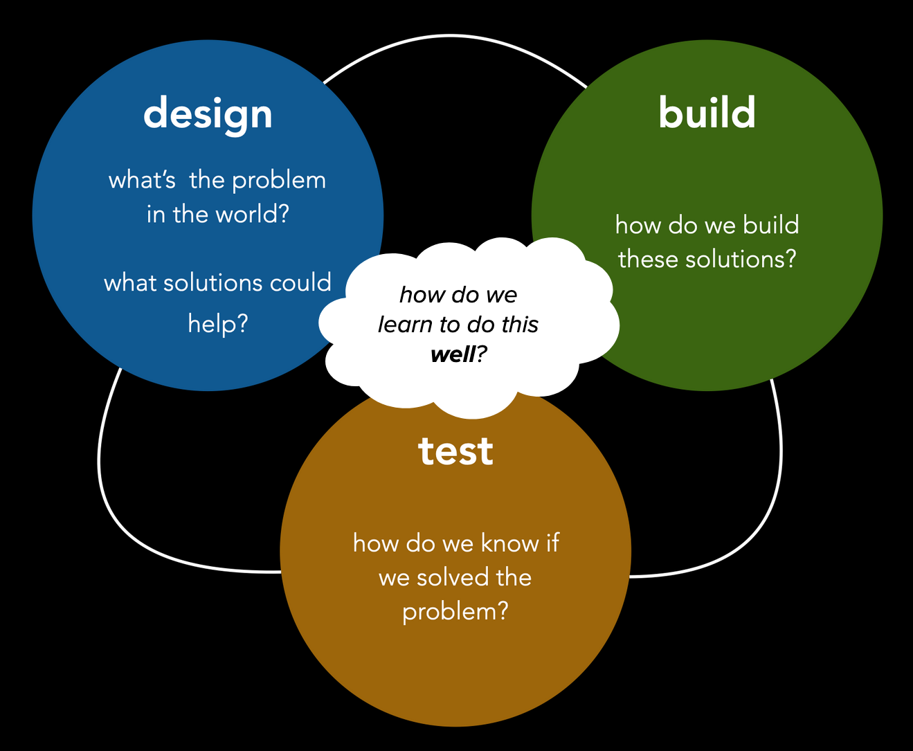

> cs 342: intro to HCI_
Professor Leesha "Aisha" Shah
moliri: (latin, v) to endeavor, to attempt, to create
lmshah2 {at} neiu {dot} edu
CBT 105
>
syllabus
>
welcome :)
>
HCI progress map
>
student drive
>
slack

> welcome :)_
Human-Computer Interaction (HCI) serves as the bridge between computing and humanity. The effective design of HCI systems requires a keen understanding of how interfaces and computer systems usefully support human endeavors (or not).
How do we know if the characteristics we design in our systems will lead to a desired outcome? How do we thoughtfully instantiate our designs in effective interface and system models? Why do existing solutions not work? Taking a step back, are our technical solutions actually addressing the underlying problems that humans face? Do we actually understand the problem?
Through this course, we will learn to ask and answer these questions for ourselves. In part, we’ll focus on developing our critical thinking and problem solving skills. We’ll practice by working on structured team projects, with mentor critique. And we’ll emphasize learning the effective structures you need to design HCI systems. We’ll also focus on softening our critical lens to achieve a deeper understanding of how to solve human problems. We’ll practice expanding our capacities for skills like humility, empathy, curiosity – mindsets that are necessary for a successful designer. Finally, we’ll focus on effective ways of working – methods like agile sprints, rapid prototyping and user testing. In learning to “do”, we will challenge ourselves to face and embrace our fears, imperfections, and failures that may otherwise hold us back from taking the next step forward. Together, we will practice how to approach difficult problems skillfully.
> Part 4: Design Arguments _
our mindset: scrappiness
Part 4 marks the beginning of a series of design sprints, where you will iteratively design, build, and test each week til end of term.
This week, we start by composing a design argument for a solution that addresses the problem you uncovered in your needfinding work. You will then develop a prototype that implements this argument, and test it with your users.
Your project deliverables this week and next week:
- compose a design argument using Canvas 04: Design Argument
- assess the risks of your design argument
- build a prototype that will test you design argument
- compose a user testing plan using Canvas 04: User Testing Plan
- assess the risks of your user testing plan
- conduct user testing to learn what works/doesn't work about your design approach
- summarize your findings in your design log
> Part 3: Deepening Your Needfinding _
our mindset: patience
This week, you will learn to assess risks in your project. we will first practice by assessing the risks in your problem statement -- what do we know/not know about the user problem? we will then assess risk in our needfinding process -- what are ways we can conduct more effective interviews? you will then take your learnings and conduct a few more interviews to deepen your needfinding. Then discuss your findings, and revise your problem statement for your user group.
Your project deliverables this week:
- as a team, assess the risks of your problem statement
- as a team, assess the risks in your needfinding process
- conduct revised user interviews, deepening your needfinding
- summarize your findings in Canvas 03: Revised Problem Statement -- use the checklists at the bottom to assess for risks before workshop
> Part 2: Needfinding and Analysis with Your Team_
our mindset: curiosity
This week, you will work as a team to conduct 5 needfinding interviews with individuals from the user population/ problem domain you picked as a team. Then discuss your findings, and work on articulating a problem statement for your user group. As always, start each week by looking at the HCI progress map.
Your project deliverables this week:
- as a team, conduct 5 user interviews to understand the user problem in more detail
- summarize your interview findings in Canvas 02: Problem Statement -- use the checklists at the bottom to evaluate what you've written
> Part 1: Needfinding and Analysis on Your Own_
our mindset: empathy
This week, your job as individuals is to conduct needfinding interviews with 3 users from different populations. You will then discuss, and pick one user population + problem to focus on as a team. As always, start each week by looking at the HCI progress map.
As we get into a flow, you'll notice a weekly routine start to form...
--> before each week starts
- read through the project brief to understand your deliverables for the week
- meet as a team to make your compass plan for the week
--> during each week
- do your project work as a team -- this will vary throughout the semester. right now, we're doing lots of user interviews. soon, we will begin prototyping and testing our designs with users
- summarize your project work in your canvas templates for the week
- get feedback on your canvas templates during your weekly workshop
--> at the end of each week
- log your completed deliverables in your planning compass -- be sure to include links so I can pop in and give you feedback
- reflect as a team, and use your planning compass to make your plan for next week
- get feedback on your canvas templates during your weekly workshop
Your project deliverables this week:
- each team member should conduct 1-3 user interviews to understand different problems from different user populations
- each team member should summarize their interviews in a Canvas 01: User Interviews slide in the team canvas
- teams should meet to discuss project ideas, and use Canvas 01: Choosing Your Team Project to pick a problem to focus on for the rest of the semester
> Part 0: Orienting to our Ecosystem_
our mindset: open mindedness
This week, your job is to orient to our little HCI ecosystem.
You have each been added to a team on slack. You should also see cubby folders for each team in the student drive (note: we may have a few more folks join us).
Every week, you will find the required readings, slides, and project assignments in our HCI progress map. This doc lives in our student drive. You must complete these before the next week’s Monday Meeting.
Check the progress map to see what you and your team need to complete before our Monday Meeting on August 28th!
Every week, we will meet for our Weekly Workshops, where we’ll deliberately practice components of the project and I will give you feedback. We start this week! For the in-person section, we will meet in class every Wednesday from 11:30-12:45p. For the online section, our Workshop will take place on Zoom. every Friday from 10-11a.
See you soon.
This class draws from the teachings of my advisor, Haoqi Zhang.